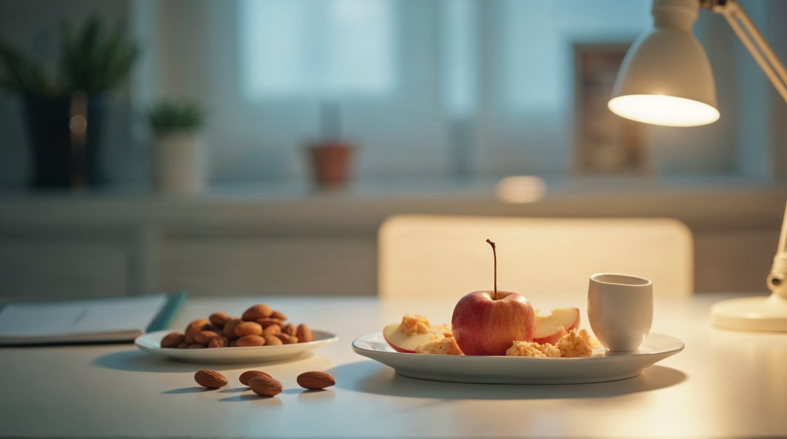
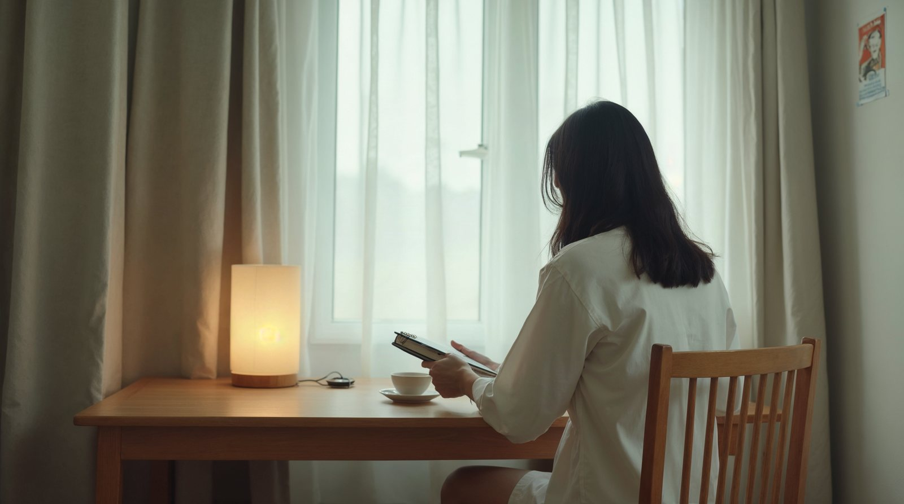
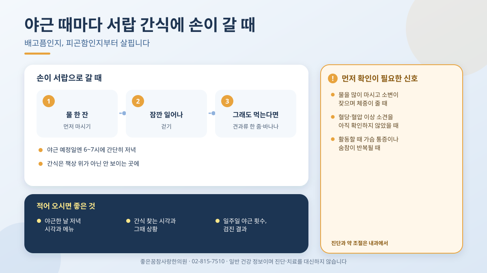

이종호 한의사 감수좋은꿈참사랑한의원 대표원장 (한의사 면허번호 19769)발행 2026-11-24 · 수정 2026-11-25
이 글의 차례
야근하는 날 저녁을 제때 간단히라도 먹는 것이 서랍 간식을 줄이기 위해 먼저 해 볼 일입니다. 장승배기나 노량진 쪽 사무실에서 늦게까지 일하시는 분들은 저녁을 제대로 못 먹고 서랍 속 과자와 초콜릿으로 버티다 체중이 늘었다고 하시며, 배가 고파서라기보다 피곤하거나 일이 막힐 때 손이 간다는 분도 있습니다.
물을 많이 마시고 소변이 잦으며 체중이 줄고 있다면 먼저 확인이 필요합니다.
왜 이런 불편이 생길 수 있나요
- 저녁을 거르면 밤이 깊어질수록 허기가 커져 단 것과 짠 것이 더 당기기 쉽습니다.
- 피곤하거나 일이 막힐 때 간식으로 기분을 바꾸는 습관이 생기면 배가 고프지 않아도 손이 갑니다.
- 잠이 부족하면 식욕이 커지는 경향이 있다고 알려져 있어 야근이 이어질수록 간식이 늘 수 있습니다.
- 눈앞에 간식이 보이면 의식하지 않고 먹는 양이 늘어나기도 합니다.
- 늦게까지 자리에 앉아만 있으면 몸을 움직일 틈이 없어, 졸음을 단 것이나 커피로 쫓으려는 경우도 있습니다.
먼저 이렇게 여쭙니다
- 야근하는 날 저녁 식사는 몇 시에, 무엇으로 드시나요?
- 간식은 하루 중 어느 때 가장 많이 찾게 되나요?
- 배가 고파서 드시나요, 피곤하거나 집중이 안 될 때 드시나요?
- 야근한 날 잠드는 시각과 다음 날 아침 입맛은 어떤가요?
- 커피나 단 음료는 하루에 몇 잔, 몇 시까지 드시나요?
일상에서 먼저 해 볼 수 있는 것
- 야근이 예정된 날은 오후 6~7시 사이에 간단하게라도 저녁 먹기
- 서랍 간식은 견과류 한 줌이나 바나나처럼 양을 정하기 쉬운 것으로 바꾸기
- 손이 가는 순간 먼저 물 한 잔 마시고 잠깐 일어나 걷기
- 간식을 책상 위가 아니라 잘 보이지 않는 곳에 두기
- 책상에는 간식 대신 물병을 두고, 한 시간에 한 번 일어나 물을 채우러 다녀오기
- 동료와 나눠 먹는 간식이 돌 때는 한 개만 덜어 두고 봉지는 돌려보내기

상황별 예시
- 예를 들어 결산이나 마감으로 일주일 내내 밤 10시까지 일하는 경우에는 오후 6~7시 사이에 회사 근처에서 간단히 먹을 수 있는 곳을 미리 정해 두고, 9시 이후 서랍에는 견과류 한 줌이나 우유처럼 양이 정해진 것만 두는 방법을 함께 정합니다.
- 예를 들어 일이 막힐 때마다 초콜릿을 하나씩 집는다는 분이라면, 간식을 서랍 대신 탕비실처럼 몇 걸음 걸어가야 하는 곳에 두고, 손이 가는 순간 자리에서 일어나 물을 마시고 오는 것부터 해 봅니다.
- 예를 들어 야근 뒤 집에 와서도 허기가 남아 라면을 먹고 늦게 잠드는 경우에는 간식보다 저녁 식사의 양과 시각을 먼저 살피고, 잠든 시각과 다음 날 아침 입맛을 함께 적어 보시도록 권합니다.
스스로 점검해 보세요
- 야근하는 날 저녁을 거르거나 밤 9시가 넘어 먹는 날이 많다
- 책상 위나 서랍에 늘 간식이 있다
- 배가 고프지 않은데도 일이 막히면 간식에 손이 간다
- 단 음료나 커피 음료를 하루 두 잔 넘게 마신다
- 간식 봉지를 열면 끝까지 다 먹게 된다
- 야근한 날은 자정을 넘겨 잠드는 날이 많다
- 다음 날 아침 입맛이 없어 아침을 거른다
세 개 이상 해당한다면 그 가운데 가장 바꾸기 쉬운 것 하나부터 이번 주에 해 보세요.

한의원에서 함께 살필 수 있는 경우
- 야근이 이어지며 체중이 꾸준히 늘어난 경우 식사 시각과 잠, 활동량을 함께 살핍니다.
- 피곤할수록 단 것이 당기는 경우 피로와 잠의 상태를 함께 살핍니다.
- 늦은 간식 뒤 속쓰림이나 더부룩함이 잦은 경우 소화 상태를 함께 살핍니다.
- 야근 뒤 잠이 늦어지고 아침 입맛이 없어 끼니가 뒤로 밀리는 경우 하루 식사 순서와 잠을 함께 살핍니다.
좋은꿈참사랑한의원에서는 첫 방문에 야근하는 날의 하루 흐름을 먼저 듣고, 맥을 짚고 혀와 배를 살핀 뒤 필요하다고 판단될 때 인바디 770 체성분 검사나 당화혈색소 검사로 함께 확인합니다.
체중 숫자보다 먹는 시각과 잠, 활동량을 먼저 보고, 회사 근처에서 저녁을 해결할 수 있는 곳이 있는지처럼 실제로 지킬 수 있는 조건을 함께 따져 생활에서 바꿀 순서를 정하며, 침·한약 상담 등이 필요한지 함께 이야기합니다. 혈압·혈당 같은 수치는 내과 진료와 함께 확인하고, 다음에 오시면 지난번 정한 것을 해 보신 뒤 어땠는지 이어서 여쭙습니다.
얼마나 지켜보고 언제 상담할까요
- 야근 날 저녁 시각과 간식 두는 곳을 바꾼 뒤 2주쯤 지켜보며 간식 횟수와 잠든 시각을 적어 보세요.
- 바꿔 본 뒤에도 야근이 있는 주마다 체중이 계속 늘거나, 먹고 나서 후회되는 날이 일주일에 여러 번 반복되면 상담을 받아 보시기를 권합니다.
- 늦은 간식 뒤 속쓰림이나 더부룩함이 한 달 넘게 자주 이어지면 소화 상태를 함께 살펴보는 것이 좋습니다.
- 물을 많이 마시고 소변이 잦으며 체중이 줄어드는 경우, 가슴 통증이나 숨참이 있는 경우에는 기다리지 말고 바로 진료를 받으세요.
이렇게 기록해 오시면 상담이 쉬워집니다
- 야근한 날의 저녁 식사 시각과 메뉴
- 간식을 찾는 시각과 그때의 상황(배고픔, 피곤, 스트레스)
- 일주일 야근 횟수와 잠든 시각
- 최근 체중 변화와 건강검진 결과
- 커피·단 음료를 마신 잔 수와 마지막으로 마신 시각
이런 증상은 먼저 확인이 필요합니다
- 물을 많이 마시고 소변이 잦으며 체중이 줄어드는 경우
- 검진에서 혈당이나 혈압 이상 소견을 받았는데 아직 확인하지 않은 경우
이런 신호가 있으면 한의원보다 가까운 병원이나 응급실을 먼저 찾으세요.
관련 글
- 편의점 도시락·라면으로 끼니를 때우는 날이 많을 때는 무엇부터 바꿔 볼까요?
- 야식을 끊기 어려울 때는 어떤 점을 먼저 살펴보나요?
- 결산·마감처럼 야근이 몰리는 주가 다가올 때 잠은 어떻게 미리 준비하나요?

여쭙는 것
- 야근하는 날 저녁 식사는 몇 시에, 무엇으로 드시나요?
- 간식은 하루 중 어느 때 가장 많이 찾게 되나요?
- 배가 고파서 드시나요, 피곤하거나 집중이 안 될 때 드시나요?
생활에서 해 볼 것
- 야근이 예정된 날은 오후 6~7시 사이에 간단하게라도 저녁 먹기
- 서랍 간식은 견과류 한 줌이나 바나나처럼 양을 정하기 쉬운 것으로 바꾸기
- 손이 가는 순간 먼저 물 한 잔 마시고 잠깐 일어나 걷기
한의원에서 함께 살필 것
- 야근이 이어지며 체중이 꾸준히 늘어난 경우 식사 시각과 잠, 활동량을 함께 살핍니다.
- 피곤할수록 단 것이 당기는 경우 피로와 잠의 상태를 함께 살핍니다.
- 늦은 간식 뒤 속쓰림이나 더부룩함이 잦은 경우 소화 상태를 함께 살핍니다.
먼저 확인이 필요한 신호
- 물을 많이 마시고 소변이 잦으며 체중이 줄어드는 경우
- 검진에서 혈당이나 혈압 이상 소견을 받았는데 아직 확인하지 않은 경우
한눈에 보는 표
| 구분 | 핵심 |
|---|---|
| 여쭙는 것 | 야근하는 날 저녁 식사는 몇 시에, 무엇으로 드시나요? 간식은 하루 중 어느 때 가장 많이 찾게 되나요? |
| 생활에서 해 볼 것 | 야근이 예정된 날은 오후 6~7시 사이에 간단하게라도 저녁 먹기 서랍 간식은 견과류 한 줌이나 바나나처럼 양을 정하기 쉬운 것으로 바꾸기 |
| 한의원에서 함께 살필 것 | 야근이 이어지며 체중이 꾸준히 늘어난 경우 식사 시각과 잠, 활동량을 함께 살핍니다. 피곤할수록 단 것이 당기는 경우 피로와 잠의 상태를 함께 살핍니다. |
| 먼저 확인이 필요한 신호 | 물을 많이 마시고 소변이 잦으며 체중이 줄어드는 경우 검진에서 혈당이나 혈압 이상 소견을 받았는데 아직 확인하지 않은 경우 |
자주 묻는 질문
간식을 아예 끊어야 하나요?
갑자기 끊으면 오히려 한 번에 많이 먹게 되는 분도 있습니다. 양과 시각을 정해 두고 조금씩 줄이는 방법을 함께 정리합니다.
저녁을 굶고 야근하면 체중 관리에 낫지 않나요?
저녁을 거르면 밤늦게 허기가 커져 간식이나 야식이 늘기 쉽습니다. 간단하게라도 제때 드시는 쪽을 권합니다.
단 것이 당길 때 대신할 만한 것이 있나요?
따뜻한 차나 물을 먼저 마시고, 그래도 허기가 있으면 견과류 한 줌이나 우유처럼 양을 정하기 쉬운 것으로 대신해 보세요.
야근할 때 커피를 여러 잔 마시는데 괜찮을까요?
늦은 시각의 커피는 잠드는 시각을 늦출 수 있고, 단 커피 음료는 간식처럼 하루에 먹는 양을 늘리기도 합니다. 오후 늦게는 물이나 무가당 차로 바꿔 보시고, 마신 시각과 잠든 시각을 함께 적어 와 주세요.
진료 시간은 어떻게 되나요?
좋은꿈참사랑한의원은 평일 09:30~20:00(점심 13:00~14:00), 토·일·공휴일 09:30~15:00에 진료합니다.
좋은꿈참사랑한의원은 재진 때 지난번 이야기부터 이어서 여쭙니다. 진료시간과 예약은 오시는 길에서 확인하세요.
어디서 상담받을 수 있나요?
좋은꿈참사랑한의원은 서울 동작구 만양로2길 2 신성빌딩 3층·5층(서울 동작구 상도동, 7호선 상도역 3번 출구 근처)에 있습니다. 한의사 3명(이종호 대표원장, 조영기 수석진료원장, 정원영 진료원장)이 진료합니다. 진료시간은 평일 09:30~20:00(점심 13:00~14:00), 토·일·공휴일 09:30~15:00이며, 방문 전 전화로 확인을 권합니다. 예약은 네이버 예약, 카카오톡 상담, 전화 02-815-7510로 받습니다.
이 글은 일반적인 건강 정보이며 개인의 진단이나 치료를 대신하지 않습니다. 증상이 있거나 복용 중인 약이 있다면 진료를 통해 확인하세요. 치료 효과는 개인마다 다를 수 있습니다.
작성 기준: 일반적으로 알려져 있는 건강 정보를 참고해 정리했습니다(대표원장 감수). 증상 기록은 1~2주 동안 하루 1회, 비슷한 시간에 적어 오시면 지난 상태와 비교하기 쉽습니다.